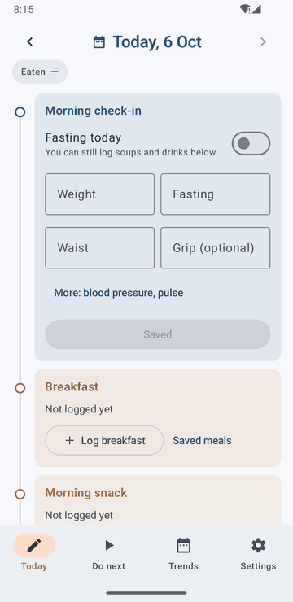
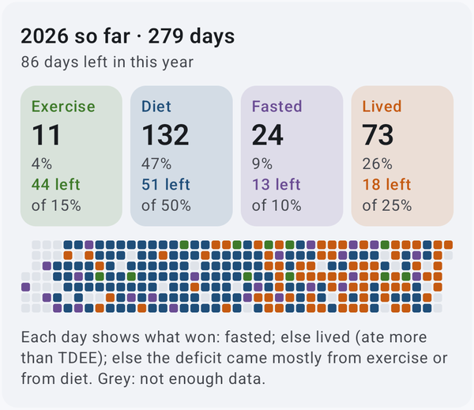
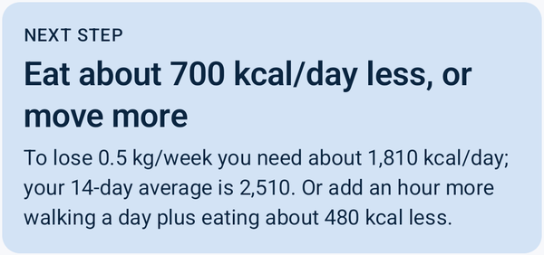

A weight-loss tracker that works out what you actually burn — from your own scale and food log — and tells you whether your metabolism is slowing down.
Most trackers stop at charts. VFit's Do next tab tells you how to evaluate your health management so far — and what to do about it.


Calorie calculators guess your expenditure from age, height and weight. VFit measures it instead: if you logged eating 2,000 kcal a day for a month and your weight trend held steady, you burn about 2,000 kcal a day — in your logging units, so consistent under-logging is absorbed rather than throwing the numbers off.
VFit is not on the Google Play Store. Install it directly — this needs installs from unknown sources enabled. Android 8.0 or newer.
Tap "Download APK" above, or get vfit.apk from the
Releases page.
When prompted after opening the APK, tap Settings → enable "Allow from this source".
Open the downloaded file from your notifications or Downloads folder. Tap Install.
In Settings, enter your height, age and goal. Log tomorrow morning's weight and your meals. Estimates start after about three weeks; already have a spreadsheet? Use Import CSV.
VFit is local only. Your weight, meals and health readings stay on your device. No account required. No data leaves your phone. No analytics, no tracking, no ads.
It started as a spreadsheet and a Python script to answer one question during a weight-loss program: is my metabolism slowing down more than the weight I've lost explains? The app runs the same model on your phone.
The code was written by Claude Code. The intent, design, and product decisions were made by a human. The animation above uses made-up demo data.